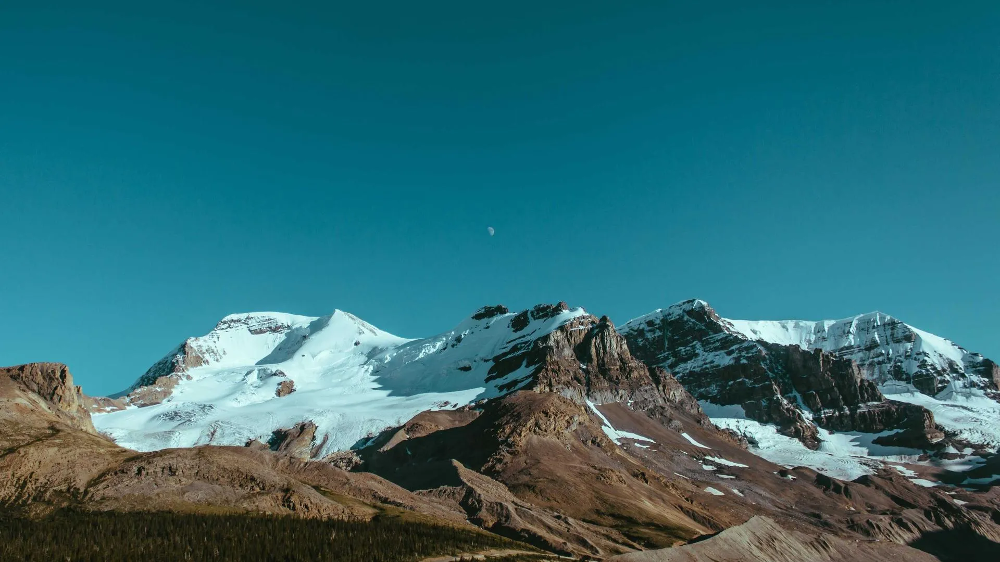
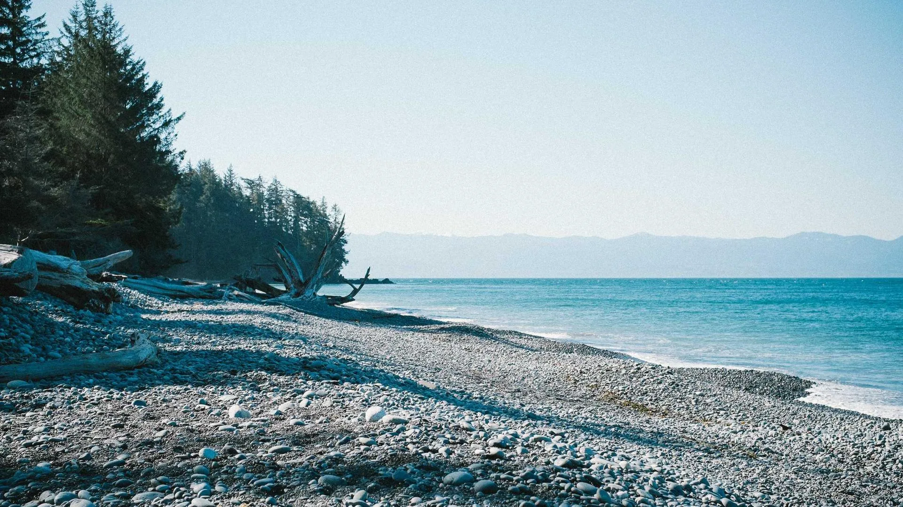
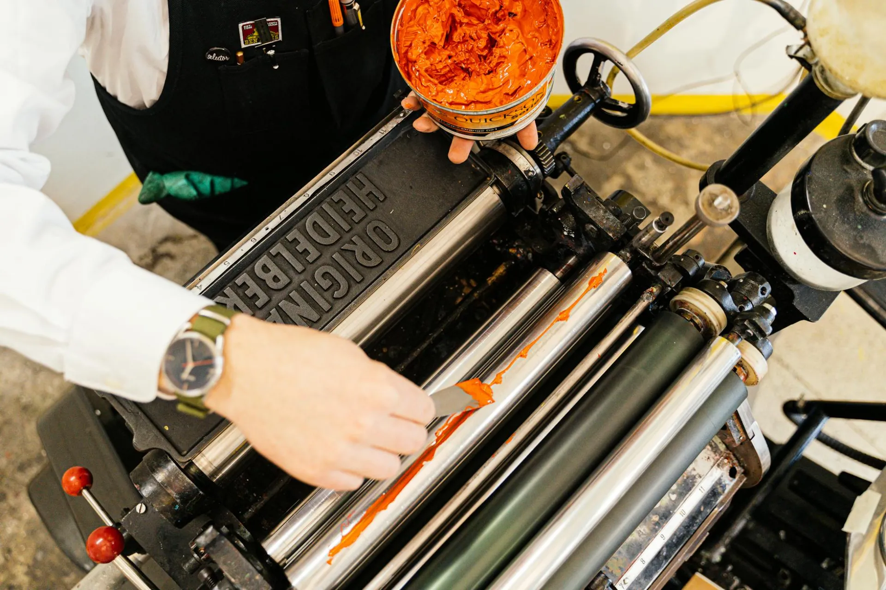

Stone
Preparation
Every edition at OFFSET begins with the preparation of a Solnhofen limestone slab — the same rock quarried in Bavaria that lithography's inventors used in 1796. The stone arrives from our supplier in slabs approximately 6 centimetres thick, in dimensions ranging from 40 × 50 cm to 70 × 100 cm.
Before an artist can draw, the stone must be levigated: ground flat with a second stone (called a levigator) and progressively finer grades of carborundum powder mixed with water. This process removes all traces of any previous image and creates the fine, even grain that receives lithographic crayon and tusche.

Artist
Drawing
The prepared stone is presented to the artist. Drawing can be done in the studio at OFFSET or, for artists who cannot travel, on a portable grained zinc plate that is transferred to stone before printing. However, most of our collaborating artists prefer to draw directly on the limestone — the material's responsiveness to crayon and tusche cannot be replicated on any substitute surface.
Lithographic drawing reverses the artist's normal expectations: a soft mark with a greasy crayon becomes a heavy tonal area in print; a rubbed, lightened area becomes grey mid-tone. The master printer works alongside the artist throughout the drawing phase, advising on how marks will translate to ink on paper.

Etching
& Fixing
Once drawing is complete, the image must be chemically fixed onto the stone. This is the etch — one of the most technically demanding stages of lithography, and one where the master printer's judgment is most critical. A mixture of gum arabic and nitric acid in precise proportions is applied across the stone surface.
The acid reacts with the calcium carbonate of the limestone and the greasy drawing marks. It desensitises the blank areas to ink while preserving the drawn marks. The proportions of gum to acid are calibrated to the specific drawing style on the stone — a heavily worked tusche area requires different acid strength than a delicate crayon passage. Misjudgement can destroy the image.

Inking
& Pressing
The fixed stone is washed with water to remove the gum and solvent, then kept damp throughout printing. The printer rolls ink across the wet stone with a large leather roller. Ink adheres only to the drawn marks — the blank stone, kept moist, repels it. A sheet of dampened rag paper is laid over the stone and passed through the flatbed press under pressure.
Each impression requires a separate pass. The stone must be re-wetted and re-inked between each pull. The printer monitors the ink film, the dampness of the stone, and the consistency of the impression with every print. Approved impressions are separated from waste sheets (bon à tirer proofs) and hung to dry.

Signing
& Edition
Dried impressions are examined by both the master printer and the artist under controlled lighting. Each impression is compared against the bon à tirer proof — the standard agreed by both parties before the edition begins. Impressions that fall below this standard are retained as records and destroyed. Only approved impressions are signed.
The artist signs each impression in pencil below the image, notes the edition number (e.g., 7/30), and the master printer countersigns. Each impression is registered in OFFSET's edition archive with a unique identifier. Once the run is complete, the stone is ground flat and returned to the cycle. No reprints, no posthumous editions, no digital reproductions for sale. The edition stands as defined.